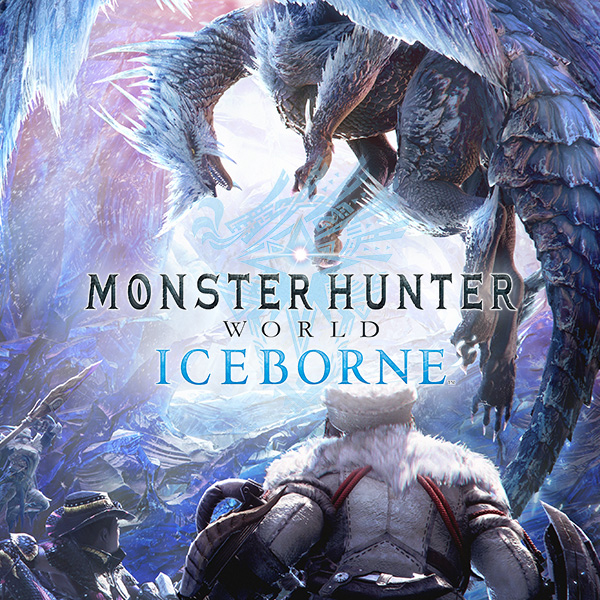

|  | |
《怪物猎人：世界》是卡普空采用MT Framework引擎开发制作的第三人称角色扮演类动作游戏，于2018年1月16日在PS4、Xbox One平台发售，2018年8月10日登陆PC端Steam平台 在游戏中，玩家将化身成猎人， 接受任务狩猎生活栖息在各种环境中的魔物。利用狩猎魔物取得的材料，制作更强的武器和防具， 挑战更强大的魔物 背景设定每十年一度，古龙们都会渡海迈向遥远彼方的新大陆。 为了解释这个被称为“古龙渡”的奇妙现象，公会组织“新大陆古龙调查团”，多次派调查团前往新大陆。
今次已是第五次派遣，为了追踪渡海的古龙熔山龙，一名猎人乘进了这巨大的船中
|
《怪物猎人世界：冰原》是CAPCOM制作发行的动作角色扮演游戏《怪物猎人：世界》的拓展包，于2019年9月6日在PS4、Xbox平台发行，2020年1月10日登陆PC端Steam平台。 该拓展包讲述了新大陆怪物突发异变，调查团就此展开追踪并发现新地区而展开的故事 背景设定有人目击到成群的风漂龙从古代树森林飞走。意识到此事并不寻常的调查团决定进行追踪调查，乘上第三期团的热气球，远渡大海。出现在波涛之后的是被冰雪封锁的世界，以及栖息于此的生态系统。 调查团的新任务是调查被称为“永霜冻土”的极寒之地。恐怕还不曾有人涉足这片新发现的地域，调查前所未见的环境生物与怪物的生态，正是此行的重要目的之一
|
| 艾露猫和随从 | |
| 苍蓝星 | 阳光哥 |
| 冰原F4 | 寝室主页 |